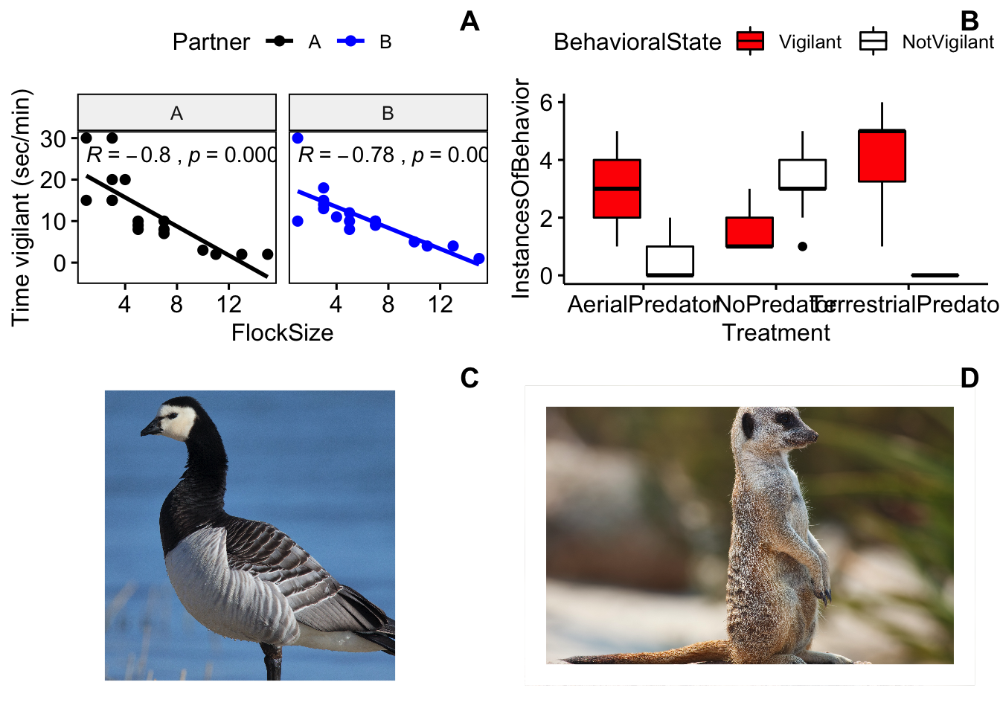
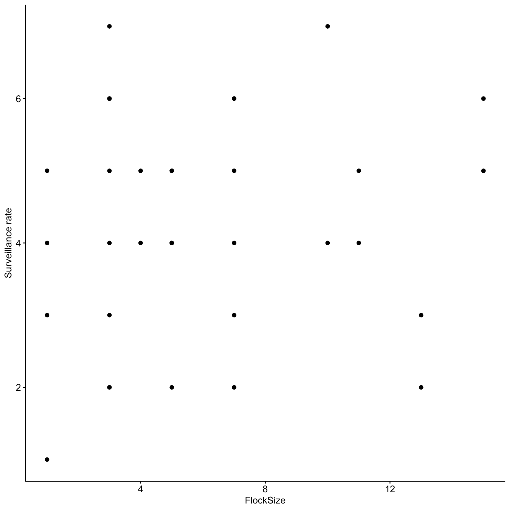
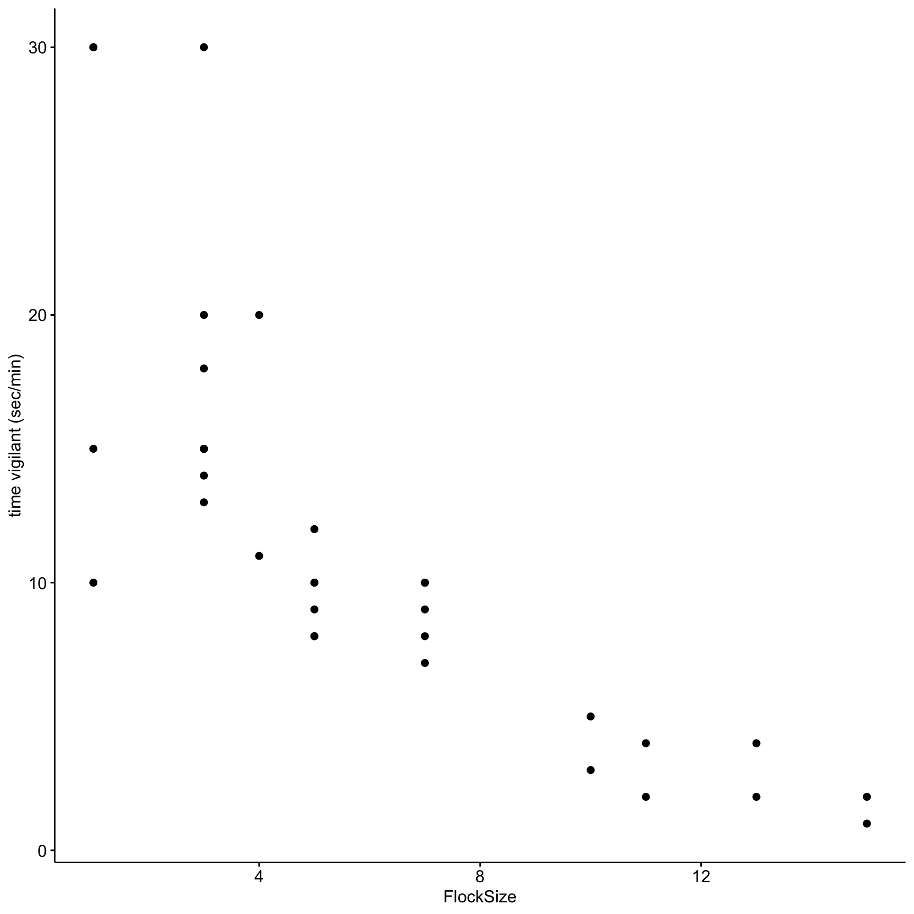
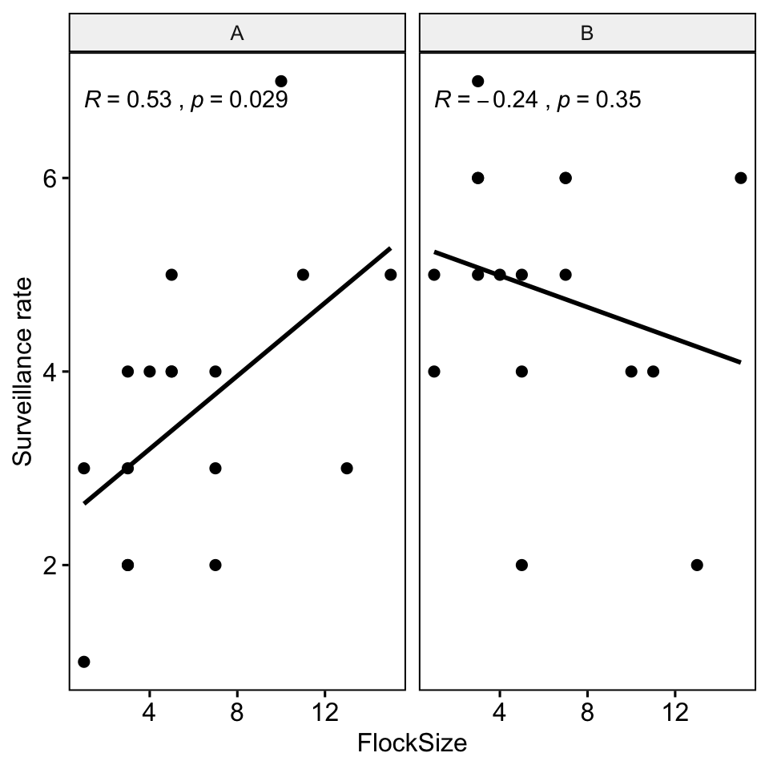
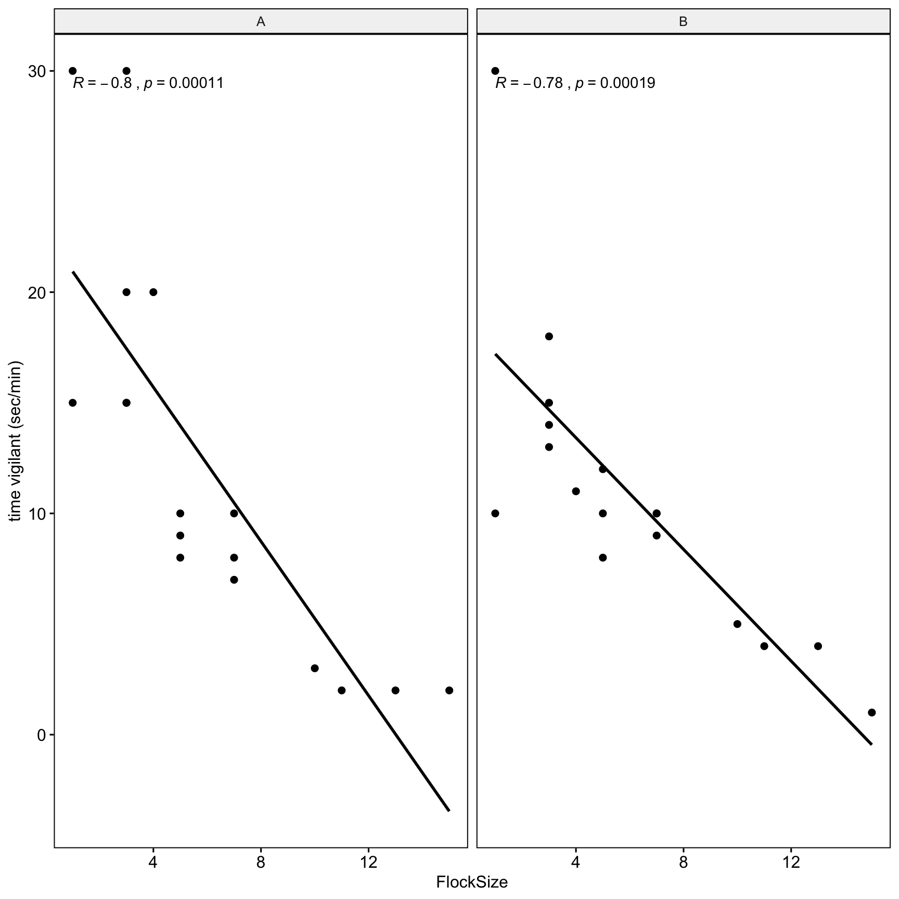
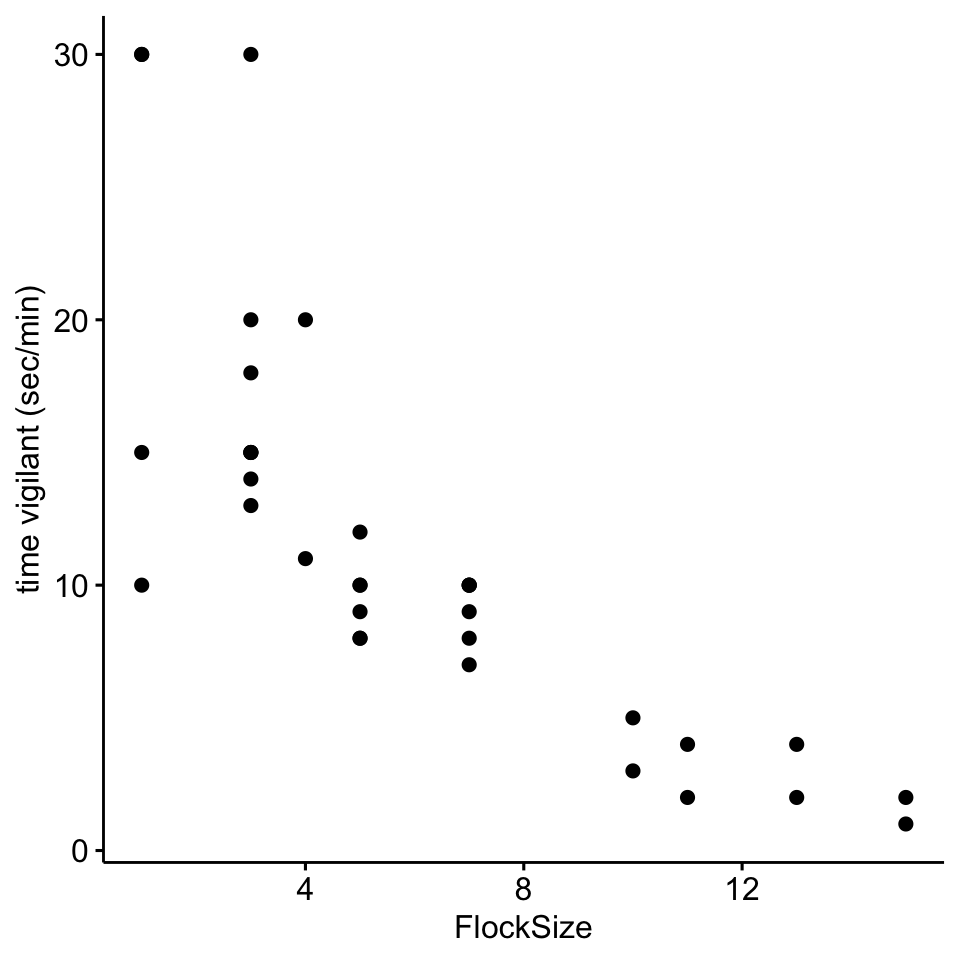
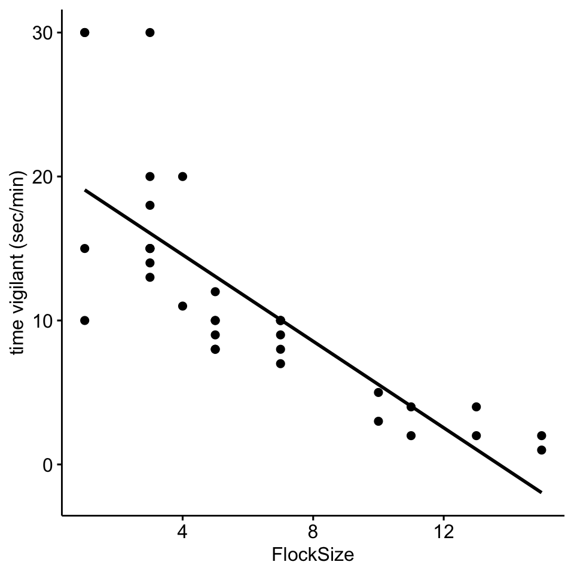
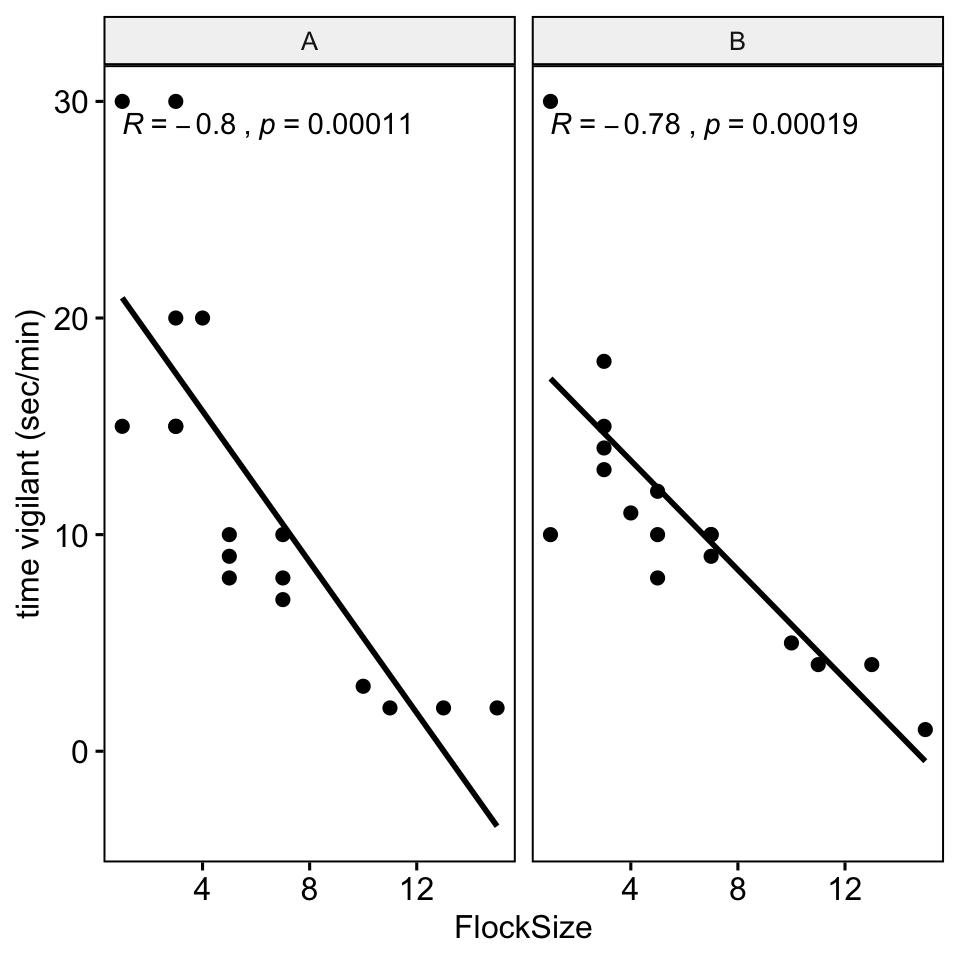
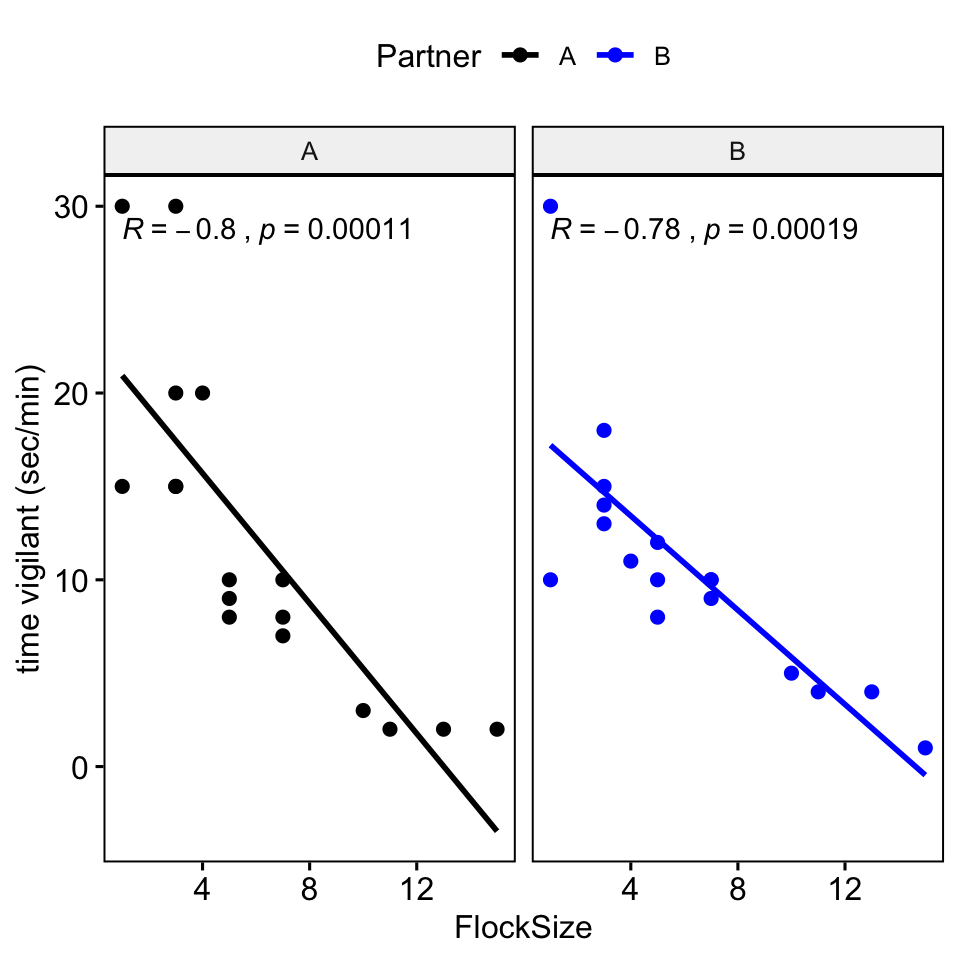
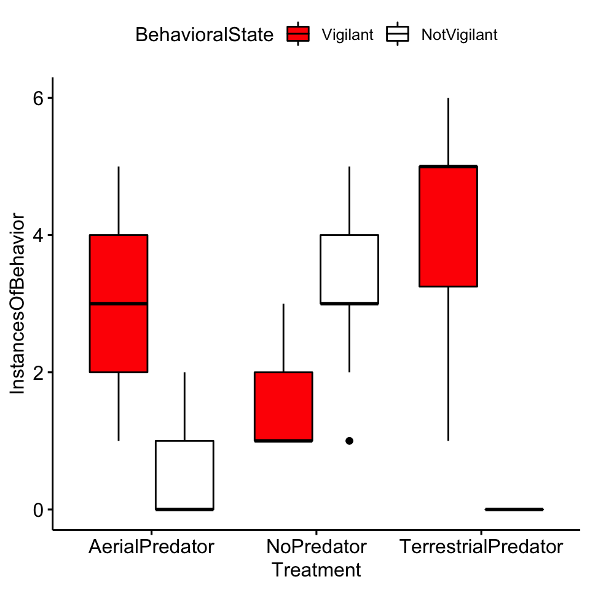

4 Lab 4. Vigilance behavior

Background
In this lab we will continue our work investigating vigilance behaviors in geese and meerkats.
Goals of the exercises
The main goal(s) of today’s lab are to:
1) Use the data on goose vigilance behavior to investigate the relationship between group size and vigilance behaviors.
2) Analyze the data collected during the meerkat lab to test for differences in vigilant behavior across predator treatment groups.
3) Continue to become familar with the way scientists analyze and interpret data.
Getting started
First we need to load the relevant packages for our data analysis. Packages contain all the functions that are needed for data analysis.
First we load the required libraries
4.1 Part 1: Barnacle goose vigilance
We load in our goose data
4.1.1 Part 1a: Surveillance behavior
First, we will calculate the surveillance rate (or the number of heads up per minute). Let’s start by looking at the total number of ‘head up’ behaviors in our ethogram. To investigate this relationship we will create a scatterplot.
# Scatterplot of total number of 'head up' in our data
ggscatter(data=BarnacleGooseData,
x='FlockSize',y='TotalHeadsUp')+ylab('Surveillance rate')
Now let’s add a trend line to see if there is a relationship between flock size and the total number of ‘head up’ behaviors
knitr::opts_chunk$set(fig.height = 5, fig.width = 5)
# Scatterplot of total number of 'head up' in our data with a trend line.
ggscatter(data=BarnacleGooseData,
x='FlockSize',y='TotalHeadsUp',add='reg.line')+ylab('Surveillance rate')
Let’s see if there were any differences between you and your partner. We will also add the command ‘cor.coef = T’ which will give us the correlation coefficient (R) along with an associated p-value.
# NOTE: The data here are simulated so your plots should look different
ggscatter(data=BarnacleGooseData,
x='FlockSize',y='TotalHeadsUp',add='reg.line', facet.by = 'Partner',
cor.coef = T)+ylab('Surveillance rate')
Let’s plot you and your partner’s data in different colors.
ggscatter(data=BarnacleGooseData,
x='FlockSize',y='TotalHeadsUp',add='reg.line', facet.by = 'Partner',
color = 'Partner', palette =c('black','blue'),
cor.coef = T)+ylab('Surveillance rate')
Question 1: Were there any major differences between you and your partner in terms of the observed relationship between flock size and surveillance rate?
Now we will do model selection using Akaike information criterion (AIC). First we create a null model and then we create a model with flock size as a predictor of total number of heads up.In the model code we specify that we are using a Poisson distribution, as we are dealing with count data instead of a continuous variable.
# This is our null model
SurveillanceNullModel <- glm(TotalHeadsUp ~ (1/Partner),family=poisson , data=BarnacleGooseData)
# This is our model with flock size as a predictor of total number of heads up
SurveillanceModel <- glm(TotalHeadsUp ~ FlockSize + (1/Partner) ,family=poisson, data=BarnacleGooseData)
# Then we compare the models using AIC
bbmle::AICtab(SurveillanceNullModel,SurveillanceModel)## dAIC df
## SurveillanceNullModel 0.0 1
## SurveillanceModel 1.6 2Question 2: If the null model is ranked higher than the model with flock size as a predictor, how do would we interpret this finding? What if the model with flock size as a predictor was ranked higher? What were your results?
4.1.2 Part 1b: Time vigilant (sec/min)
Now we will look at the relationship between the duration (calculated as seconds per minute) that the geese were vigilant as a function of flock size.
# Scatterplot of time vigilant (sec/min) as a function of group size
ggscatter(data=BarnacleGooseData,
x='FlockSize',y='TimeSecHeadUp')+ylab('time vigilant (sec/min)')
Now let’s add a trend line to see if there is a relationship between flock size and the duration of vigilance.
# Scatterplot of duration of vigilance behavior in our data with a trend line.
ggscatter(data=BarnacleGooseData,x='FlockSize',y='TimeSecHeadUp',add='reg.line')+
ylab('time vigilant (sec/min)')
Let’s see if there were any differences between you and your partner. We will also add the command ‘cor.coef = T’ which will give us the correlation coefficient (R) along with an associated p-value.
# NOTE: The data here are simulated so your plots should look different
ggscatter(data=BarnacleGooseData,x='FlockSize',y='TimeSecHeadUp',add='reg.line',
facet.by = 'Partner',cor.coef = T)+
ylab('time vigilant (sec/min)')
Let’s plot you and your partner’s data in different colors.
ggscatter(data=BarnacleGooseData,x='FlockSize',y='TimeSecHeadUp',add='reg.line',
facet.by = 'Partner', color='Partner', cor.coef = T,
palette =c('black','blue'))+
ylab('time vigilant (sec/min)')
As before we will create a null model and then a model with flock size as a predictor and compare them using AIC. We will not use a Poisson distribution here because our outcome variable is continuous.
# This is our null model
VigilanceNullModel <- lme4::lmer(TimeSecHeadUp ~ (1|Partner), data=BarnacleGooseData)
# This is our model with flock size as a predictor duration of vigilance
VigilanceModel <- lme4::lmer(TimeSecHeadUp ~ FlockSize + (1|Partner) ,data=BarnacleGooseData)
# Now we compare the models using AIC
bbmle::AICtab(VigilanceNullModel,VigilanceModel)## dAIC df
## VigilanceModel 0.0 4
## VigilanceNullModel 28.1 3#Question 3. How do you interpret the results of your model selection? Was there a relationship between flock size and duration of vigilance behavior?
4.2 Part 2: Meerkat data revisted
Please upload your meerkat scan data to this project and delete the existing datasheet.
As before we will turn our NA values to zero
We will remove the time and out of sight columns as we do not need them
We need to reformat our data so that we can plot it
Here we add more informative column names
colnames(MeerkatScanDataSummaryLong) <- c('Treatment','Partner',
'BehavioralState','InstancesOfBehavior')We need to tell R that our outcome variable is not categorical but numeric
MeerkatScanDataSummaryLong$InstancesOfBehavior <-
as.numeric(MeerkatScanDataSummaryLong$InstancesOfBehavior)Now we plot our data.
ggboxplot(MeerkatScanDataSummaryLong,x='Treatment',
y='InstancesOfBehavior', fill = 'BehavioralState')+scale_fill_manual(values = c('red','white','black'))
Question 4. Based on your inspection of the boxplots, are there any major differences between treatment groups?
Now we will test to see if there were differences in vigilance behaviors across treatments.
# First we subset our data so that it only includes the vigilant category
MeerkatScanDataVigilantOnly <- subset(MeerkatScanDataSummaryLong,
BehavioralState=='Vigilant' )
# R can be picky about the format of data, so we use this command to tell R that treatment group is a factor
MeerkatScanDataVigilantOnly$Treatment <-
as.factor(MeerkatScanDataVigilantOnly$Treatment)
# Here we are reordering the levels of the factors. For our model selection we are interested in whether we see differences from the control (no predator) and the predator treatments, so here we are setting the no predator group as our reference group.
MeerkatScanDataVigilantOnly$Treatment <-
factor(MeerkatScanDataVigilantOnly$Treatment, levels = c("NoPredator", "AerialPredator",
"TerrestrialPredator"))Now as before we will do model selection. Note that because our outcome variable (instances of behavior) is in the form of count data we use a poisson distribution.
# This is the null model.
MeerkatVigilanceNullModel <- glm(InstancesOfBehavior ~ 1, family=poisson, data=MeerkatScanDataVigilantOnly)
# This is the model with treatment as a predictor of instances of vigilant behavior
MeerkatVigilanceModel <- glm(InstancesOfBehavior ~ Treatment, family=poisson,data=MeerkatScanDataVigilantOnly)Now we compare the models using AIC
## dAIC df
## MeerkatVigilanceModel 0.0 3
## MeerkatVigilanceNullModel 59.2 1Here we will use the summary function to look at the estimates. There is a lot of information here but we want to focus on the ‘Estimate’. In particular we are interested in the estimates for ‘TreatmentAerialPredator’ and ‘TreatmentTerrestrialPredator’. The estimate is showing the effect that these variables have on our outcome (instances of behavior), relative to our control (no predator).Therefore positive estimates indicate that there were more vigilance behaviors in aerial and terrestrial predator treatments.
##
## Call:
## glm(formula = InstancesOfBehavior ~ Treatment, family = poisson,
## data = MeerkatScanDataVigilantOnly)
##
## Deviance Residuals:
## Min 1Q Median 3Q Max
## -1.9295 -0.3475 -0.1588 0.3696 1.1825
##
## Coefficients:
## Estimate Std. Error z value Pr(>|z|)
## (Intercept) 0.3285 0.1414 2.323 0.0202 *
## TreatmentAerialPredator 0.8671 0.1685 5.145 2.68e-07 ***
## TreatmentTerrestrialPredator 1.1362 0.1582 7.182 6.86e-13 ***
## ---
## Signif. codes: 0 '***' 0.001 '**' 0.01 '*' 0.05 '.' 0.1 ' ' 1
##
## (Dispersion parameter for poisson family taken to be 1)
##
## Null deviance: 100.802 on 117 degrees of freedom
## Residual deviance: 37.587 on 115 degrees of freedom
## AIC: 384.39
##
## Number of Fisher Scoring iterations: 4A common way to visulize results such as these are coefficient plots. Here we are looking at the effect of ‘TreatmentAerialPredator’ and ‘TreatmentTerrestrialPredator’ relative to our control group. The reference or group is indicated by the vertical dashed line. So, we can interpret that because the coefficients are positive (and the confidence intervals don’t overlap zero) that both terrestrial and aerial treatments lead to an increase in vigilant behaviors.
## Registered S3 methods overwritten by 'useful':
## method from
## autoplot.acf ggfortify
## fortify.acf ggfortify
## fortify.kmeans ggfortify
## fortify.ts ggfortify
For reasons that will not go into here, I am not a fan of p-values or null hypothesis significance testing. There is a nice overview if you want to learn more here: https://doi.org/10.1098/rsbl.2019.0174. But,the model selection approach we used will lead to the same inference as the use of a one-way anova, an approach that you may be more familiar with.
Compute the analysis of variance
Here this will tell us if there are differences between groups. A significant p-value (< 0.05) indicates there are differences between treatment groups.
## Df Sum Sq Mean Sq F value Pr(>F)
## Treatment 2 176.0 88.02 87.03 <2e-16 ***
## Residuals 115 116.3 1.01
## ---
## Signif. codes: 0 '***' 0.001 '**' 0.01 '*' 0.05 '.' 0.1 ' ' 1Since the ANOVA test is significant, we can compute Tukey Honest Significant Differences test. Again, a significant p-value (< 0.05) indicates there are differences between treatments.
## Tukey multiple comparisons of means
## 95% family-wise confidence level
##
## Fit: aov(formula = InstancesOfBehavior ~ Treatment, data = MeerkatScanDataVigilantOnly)
##
## $Treatment
## diff lwr upr p adj
## AerialPredator-NoPredator 1.916667 1.3538432 2.479490 0.0e+00
## TerrestrialPredator-NoPredator 2.937198 2.4058425 3.468554 0.0e+00
## TerrestrialPredator-AerialPredator 1.020531 0.4891758 1.551887 3.8e-05Question 5. Based on your interpretation of the model selection and the coefficient plots were there differences between treatment groups (e.g. control, terrestrial and aerial predators) in meerkat vigilance behavior?